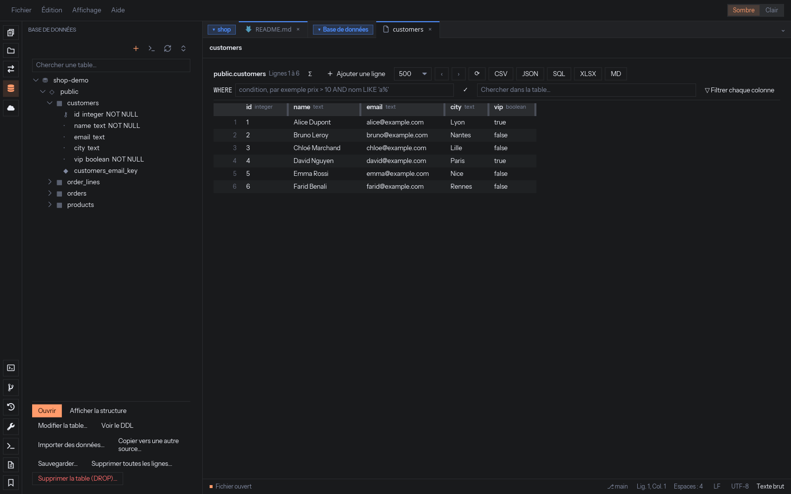
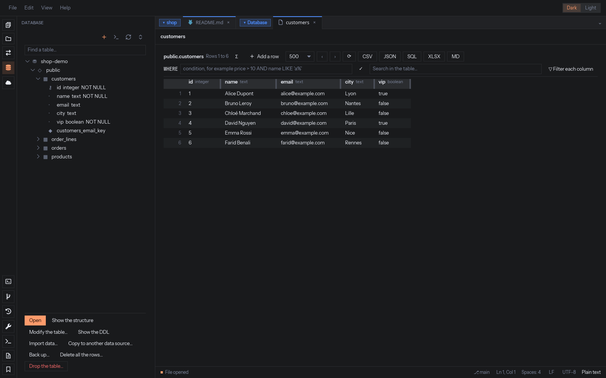
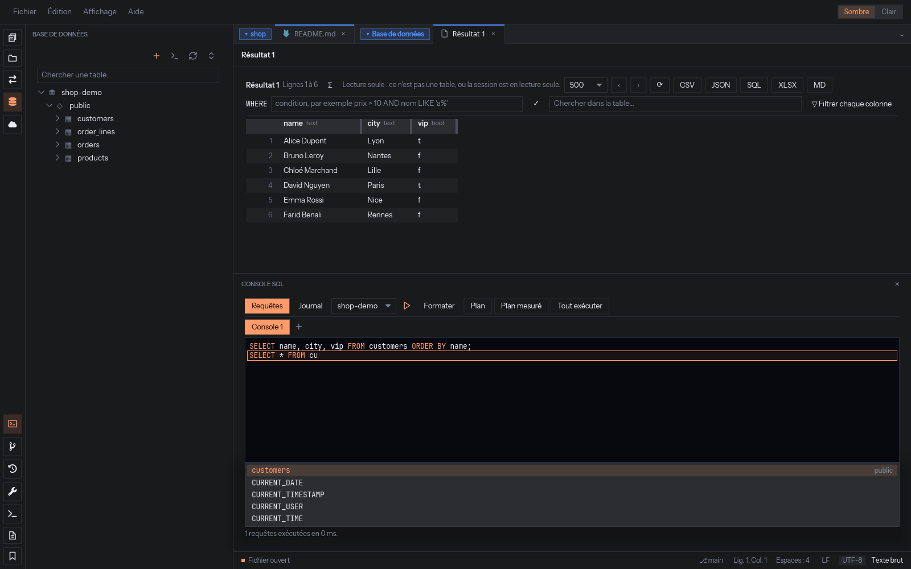
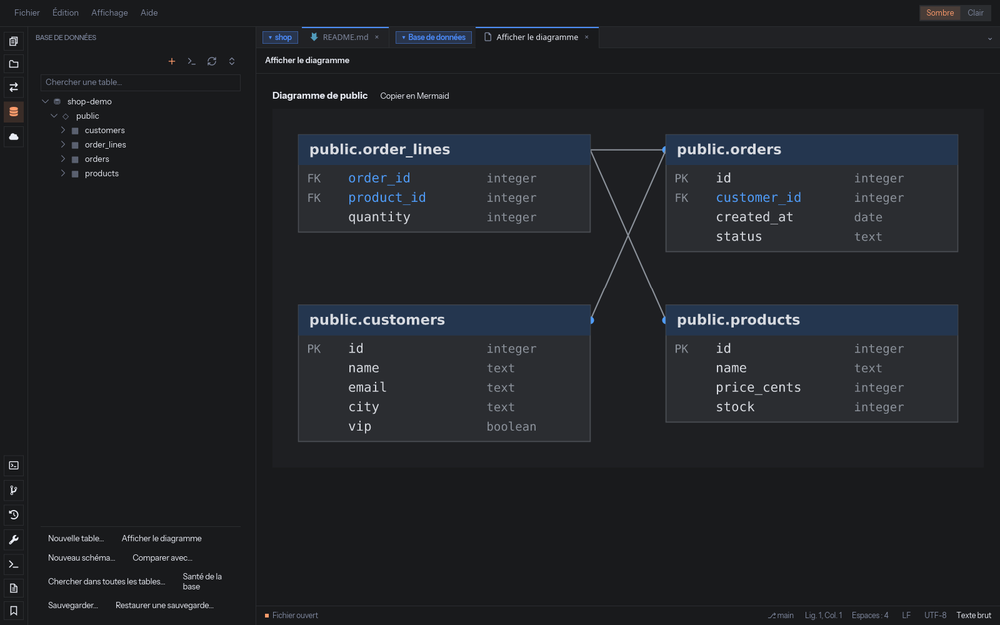
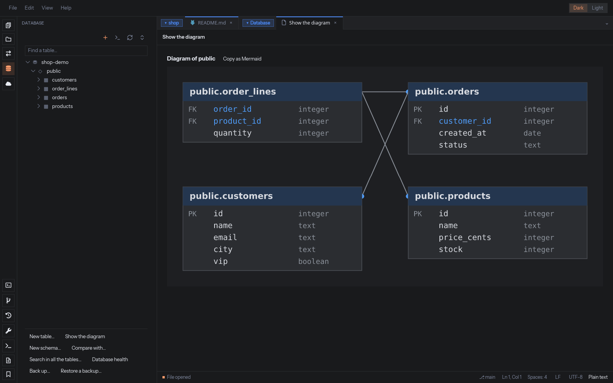
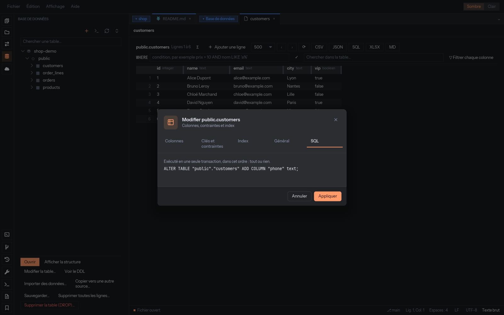
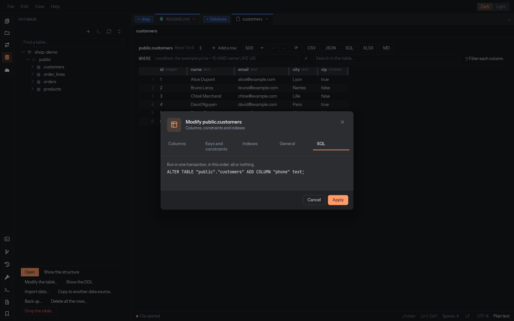

Base de donnéesDatabase
PostgreSQL, MySQL/MariaDB et SQLite : explorer, modifier, interroger.PostgreSQL, MySQL/MariaDB and SQLite: browse, edit, query.
Se connecter à une base (le Docker de test fait très bien l'affaire), ouvrir une table, modifier une cellule, voir le SQL puis Commit.Connect to a database (a test Docker container is perfect), open a table, edit a cell, see the SQL then Commit.
Vidéo à venirVideo to comePrésentationOverview
Un client de bases de données intégré : l'arbre des sources dans la barre latérale, les tables éditables dans des onglets, une console SQL avec complétion, un concepteur de tables, des imports, exports et sauvegardes, et le diagramme ER.
A database client built in: the tree of data sources in the sidebar, editable tables in tabs, a SQL console with completion, a table designer, imports, exports and backups, and the ER diagram.
Sources et arbreSources and tree
- PostgreSQL, MySQL / MariaDB et SQLite, en direct ou par un tunnel SSH, avec TLS.PostgreSQL, MySQL / MariaDB and SQLite, directly or through an SSH tunnel, with TLS.
- L'arbre de chaque source : bases, schémas, tables et leurs composants, fonctions, séquences, types ; sous l'arbre, les actions du nœud choisi (ouvrir, structure, modifier, DDL, import, copie, sauvegarde et restauration, vider, supprimer, nouvelle table ou schéma, diagramme ER, santé).The tree of each source: databases, schemas, tables and what they are made of, functions, sequences, types; under it, the actions for the node picked (open, structure, modify, DDL, import, copy, backup and restore, empty, drop, new table or schema, ER diagram, health).
- Mots de passe gardés dans le trousseau du système si vous le demandez.Passwords kept in the system keychain when asked to.


Barre latérale avec une source PostgreSQL dépliée (schémas, tables) et une table ouverte dans un onglet.Sidebar with an expanded PostgreSQL source (schemas, tables) and a table open in a tab.
Capture à venirScreenshot to comeUne table dans un ongletA table in a tab
- Les lignes par pages, une condition WHERE, une recherche, des filtres par colonne, des tris, des colonnes masquées, la ligne en formulaire.Rows by pages, a WHERE condition, a search, filters by column, sorts, hidden columns, the row as a form.
- Cellules modifiées, lignes ajoutées et supprimées : tout attend le « Commit » (le SQL est montré d'abord) ; sélecteur de date ; liens vers les lignes référencées et celles qui référencent.Cells edited, rows added and deleted, all waiting for Commit (the SQL shown first); a date picker; links to the rows a row points to and those that point to it.
- Export en CSV, JSON, SQL, XLSX et Markdown.Export to CSV, JSON, SQL, XLSX and Markdown.

Console SQL sous l'éditeur : une requête, son résultat, la liste de complétion ouverte.SQL console under the editor: a query, its result, the completion list open.
Capture à venirScreenshot to comeConsole SQLSQL console
- Requêtes en onglets sous l'éditeur, complétion des tables et colonnes, exécution de l'instruction sous le curseur ou de la sélection, Explain, transactions.Queries in tabs under the editor, completion of tables and columns, the statement under the cursor or the selection run, Explain, transactions.
- Valeurs demandées pour
:nomet?, garde-fou avant une écriture sans WHERE, journal de ce qui a été exécuté.Values asked for:nameand?, a guard before writes without WHERE, and the log of what was run.


Diagramme ER d'un schéma d'exemple.ER diagram of a sample schema.
Capture à venirScreenshot to comeConcevoir, comprendre, sauvegarderDesign, understand, back up
- Concepteur de tables : colonnes, clés et contraintes, index, nom et commentaire, et le SQL qui en résulte.Table designer: columns, keys and constraints, indexes, name and comment, and the SQL that comes of it.
- Diagramme ER d'un schéma (copiable en Mermaid), santé d'une base (tailles, lignes mortes, index inutilisés).ER diagram of a schema (copied as Mermaid), health of a database (sizes, dead rows, unused indexes).
- Import CSV et JSON, copie d'une table vers une autre source, sauvegarde et restauration.Import of CSV and JSON, copy of a table to another source, backup and restore.


Concepteur de table ouvert (colonnes, index) avec le SQL généré.Table designer open (columns, indexes) with the generated SQL.
Capture à venirScreenshot to comeInstaller et réglerInstall and configure
Ouvrez Fichier › Préférences… › Plugins, cherchez « Base de données » et cliquez sur Installer.
Open File › Preferences… › Plugins, search for “Database” and click Install.
PrérequisRequirements
- Les pilotes (PostgreSQL, MySQL, SQLite) sont des programmes à part livrés avec le plugin : rien d'autre à installer.The drivers (PostgreSQL, MySQL, SQLite) are programs of their own, shipped with the plugin: nothing else to install.
RéglagesSettings
Le formulaire de connexion (tuile du type de source, six onglets, test de connexion) s'ouvre dans une fenêtre par-dessus l'éditeur.
The connection form (a tile for the kind of source, six tabs, a connection test) opens in a window over the editor.
Code source et licenceSource and license
Dépôt : ardoise-editor/plugin-database · identifiant ardoise.database · version 1.4.1 · licence MIT.
Repository: ardoise-editor/plugin-database · id ardoise.database · version 1.4.1 · MIT license.